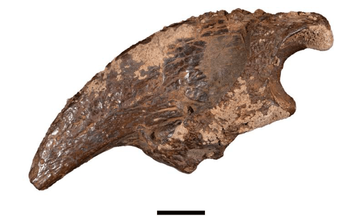

Swimming through a flooded underground cave littered with bones might sound like a nightmare, but for paleontologists at the University of Texas the aquatic spelunking trip uncovered a rich cache of fossils left by prehistoric megafauna.
“There were fossils everywhere, just everywhere, in a way that I haven’t seen in any other cave,” John Moretti said in a statement. “It was just bones all over the floor.”
Moretti, along with his colleague John Young, strapped on goggles and snorkels to venture into the watery cave six times to hunt for fossils, detailing their findings in the journal Quaternary Research. There, they discovered bones from giant tortoises, saber-tooth cats, camels, ground sloths, mastodons, and pampatheres—massive armadillos that grew to the size of lions.
Read more: “The Secret, Stressful Stories of Fossils”
Unfortunately, what made the fossil hunt relatively easy—the bones were just lying in the stream bed, ripe for the picking—also made dating them difficult. Without encasing material to study, the researchers were left to piece together their ages from other clues.
While the ground sloth and mastodon lived in forests, the giant tortoise and humongous armadillos required warmer temperatures. Because of this, researchers say the bones were likely from an interglacial period that occurred 100,000 years ago, when a relatively warm period offered a respite from frigid Ice Age temperatures. Despite excavations in the area for almost a century, this is the first time these fossils have been found in the area.

CAVE CLAW: This fossil claw from the giant ground sloth Megalonyx was found in a flooded, underground limestone cave in Texas. The black bar shows a scale of two centimeters. Photo by John Moretti / The University of Texas at Austin.
“This site is showing us something different, and that’s really important because of all the work that’s been done in this region,” Moretti said. “If it is interglacial in age, it’s a new window into the past and into a landscape, environment, and animal community that we haven’t observed in this part of Texas before.”
The site of this particular find, Bender’s Cave in Comal County near San Antonio, was located on private property, and Moretti said it’s important to have cooperation from local landowners for future finds. “These connections and partnerships make possible a lot of the natural science that gets done in Texas,” he explained. “It takes contributions from everyone—not just scientists at universities—to learn about the natural world we live in and depend on.”
Central Texas is filled with limestone caves like this one, carved by erosion over millenia, and there could be even more treasure troves of prehistoric fossils just waiting to be found. All it takes is a little cooperation, and of course, the courage to venture into a dark, watery tunnel. 
Enjoying Nautilus? Subscribe to our free newsletter.
Lead image: Adapted from artwork by Jaime Chirinos